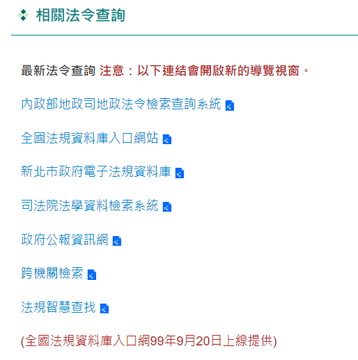
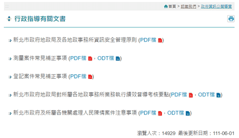
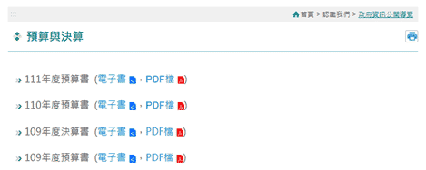
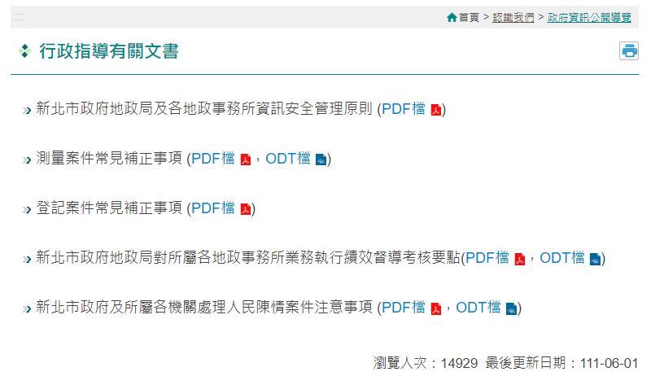
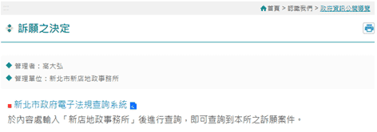
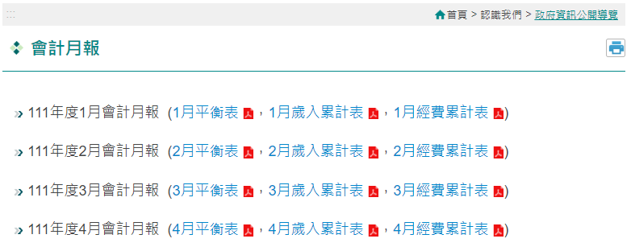
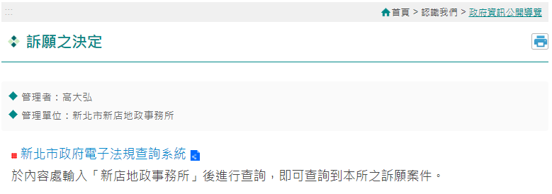
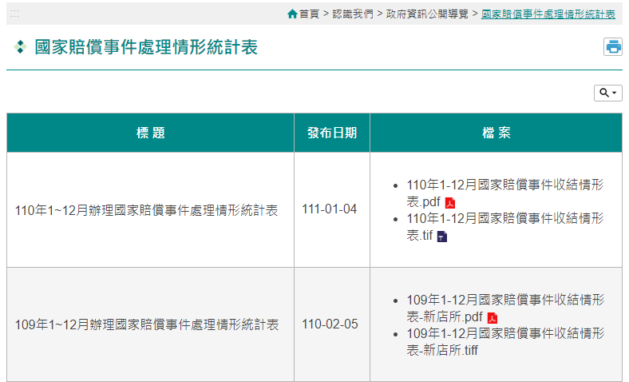
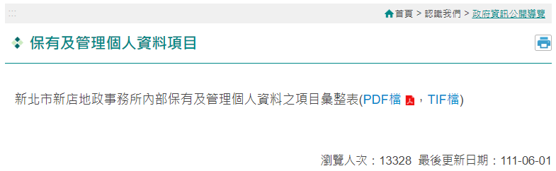
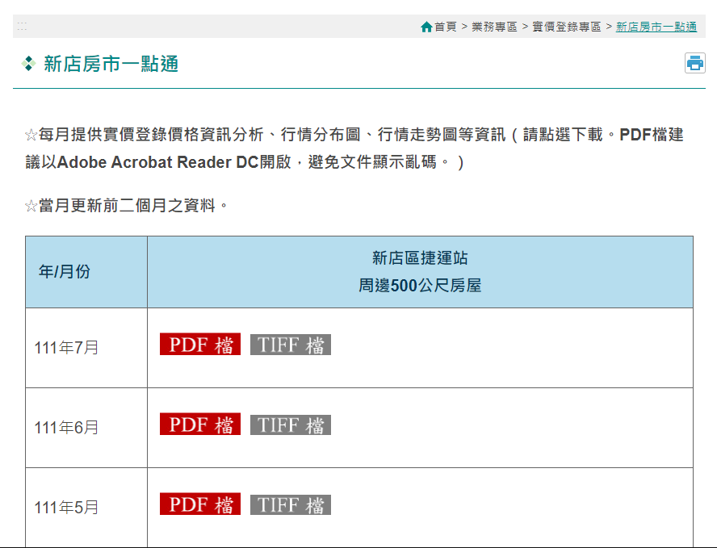

四、服務資訊透明度
(一) 資料開放
-
政府資訊公開導覽
為提供民眾公平公開獲得政府資訊權利，本所依據政府資訊公開法明訂之「主動公開政府資訊之範圍」，彙整本所網站主動公開之政府資訊連結以及目錄，方便民眾瀏覽。主動公開政府資訊項目 說明 本所網站內容 - 一、條約、對外關係文書、法律、緊急命令、中央法規標準法所定之命令、法規命令及地方自治法規
依據現行政府機關規定，條約、法律與中央法規等，皆由政府公報制度與法務部全國法規資料庫彙整 
- 二、政府機關為協助下級機關或屬官統一解釋法令、認定事實、及行使裁量權，而訂頒之解釋性規定及裁量基準
依據行政程序法規定，裁量基準與函釋應於公報發佈。 - 三、政府機關之組織、執掌、地址、電話、傳真、網址及電子郵件信箱帳號
均於本所網站公布 組織職掌
聯絡資料
主任信箱- 四、行政指導有關文書
均於本所網站公布 - 五、施政計畫、業務統計及研究報告
公佈本所業務統計、研究報告與出版品 施政計畫
業務統計
研究報告
為民服務白皮書- 六、預算與決算書
均於本所網站公布 - 七、會計月報
均於本所網站公布 - 八、請願之處理結果及訴願之決定
均於本所網站公布 - 九、書面之公共工程及採購契約
書面契約存於本所總務室 無 - 十、支付或接受之補助
本所目前尚無支付與接受補助 無 - 十一、合議制機關之會議紀錄
本所非合議制機關，故無該類資訊 無 - 十二、國家賠償事件處理情形統計表
均於本所網站公布 - 十三、保有及管理個人資料彙整表
公佈本所內部保有及管理個人資料之項目  -
所文件表格
為加速推動ODF為政府文件標準格式政策，本所網站供民眾下載之各類申請書表，皆提供odt、pdf格式。 -
公告土地現值、公告地價
提供當年度本所各轄區之公告土地現值、公告地價資料，供民眾閱覽、查詢。 -
未辦繼承專區
本所網站特別建置「未辦繼承專區」，提醒民眾盡速申辦繼承登記。並且將當年度未辦繼承之不動產標的列冊管理供大眾查詢。 -
不動產資訊
包含本所轄區內之重大建設及重大工程內容。主動向民眾揭露工程項目、開發簡介及辦理進度。